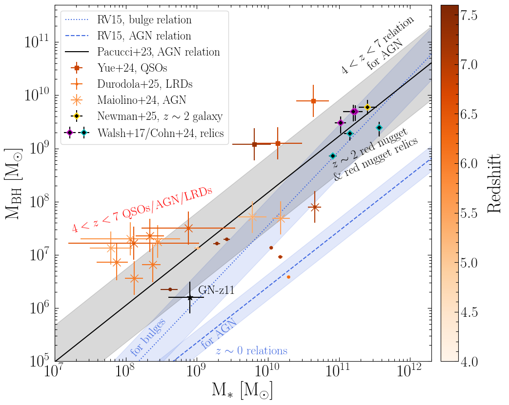
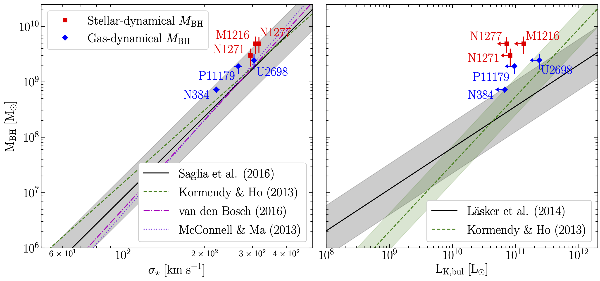

Science
I am an extragalactic observational astronomer, working on dynamical mass measurements of supermassive black holes (BHs) and studying host galaxy and BH (co-)evolution. More broadly, I am interested in studies of galaxy evolution and extragalactic astronomy.
Current Work
Evidence for evolutionary pathway-dependent black hole scaling relationsSchematic showing how different evolutionary pathways affect the placement of galaxies on the BH mass-total stellar mass relation (Cohn et al. 2025, accepted for publication in ApJL).
Single-epoch black hole masses in the early Universe have grown more common in the era of JWST, pointing toward overmassive black holes compared to the stellar masses of galaxies at high redshift. However, single epoch black hole masses carry many systematic uncertainties, and complementary methods are required to better understand the state of the scaling relations at high redshift. We compare dynamical black hole mass measurements in local relic galaxies, which are thought to be representative of z~2 red nuggets, to these high-redshift results. For more information on these dynamical measurements, see the section below on "Supermassive black holes in local compact relic galaxies."
We find the red nugget relics align with both the local BH mass-total stellar mass relation for bulges, as well as the BH mass-total stellar mass relation for 4<z<7 AGN. Our results suggest that, since many evolutionary processes affect the total stellar mass in galaxies, the BH mass-total stellar mass relation is strongly dependent on the evolutionary pathway of the targeted sample. Apparent redshift changes to the relation are likely driven by changes in dominant evolutionary stages of galaxy growth over the Universe's history.
This work was recently accepted for publication in ApJL (Cohn et al. 2025).
These results were discussed in the starxiv podcast in April 2025.
Supermassive black holes in local compact relic galaxiesLocal compact galaxies, which are likely relics of z~2 red nugget galaxies, appear to house over-massive black holes compared to the black hole mass-bulge luminosity relation (Cohn et al. 2024).
We study nearby (<100 Mpc away) early-type galaxies that resemble typical quiescent galaxies at z~2, known as red nuggets. Most massive elliptical galaxies, where the largest supermassive black holes in the local Universe are found, are thought to have grown from such z~2 red nuggets via dry mergers. However, the local compact galaxies appear to be relics of red nuggets that did not undergo any major merger activity since z~2, indicating the masses of their BHs may provide a unique window into the typical masses of BHs at z~2.
I create a molecular gas-dynamical thin disk model based on ALMA observations of CO(2-1) emission in the circumnuclear cold gas disks of local compact galaxies. I explore the parameter space using the nested sampling code dynesty, which is based on Bayesian inference. With these models, I constrain the BH mass as well as other galaxy parameters. I then compare these galaxies to the BH scaling relations.
I have published results in Cohn et al. (2021), Cohn et al. (2023), and Cohn et al. (2024).
Outside of the relic galaxy sample, I co-led work on molecular gas-dynamical black hole mass measurements in two more elliptical galaxies: NGC 4786 and NGC 5193, alongside Kyle Kabasares. Results are published in Kabasares & Cohn et al. (2024).
Research mentoring
Since Summer 2024, I have begun working with an undergraduate student at Dartmouth, Ricardo Mendez. Ricardo is working with longslit optical spectroscopic data from the Southern African Large Telescope (SALT). The goal of this project is to measure robust central stellar velocity dispersions in massive early-type galaxies with small effective radii, to identify targets that may be red nugget relic galaxies in the Southern Sky (which is more ideal for follow-up ALMA observations). After identifying likely relic galaxies and targets that are ideal for dynamical supermassive black hole mass measurements, we will obtain ALMA data to make those BH mass measurements.
Since Winter 2025, I have mentered two more undergraduates at Dartmouth, Dilhan Flores and Luke Moffett. Luke is working on using Multi-Gaussian Expansions to study the surface brightness profiles in local massive ETGs. Dilhan is working on performing molecular gas-dynamical supermassive black hole mass measurements with archival ALMA data as well with new ALMA observations of local massive ETGs. These massive ETGs are important targets to study, as the scaling relations with bulge luminosity and stellar velocity dispersion predict different BH mass values.
Past work
Star formation histories of extreme emission line galaxies at 2.5 ≤ z ≤ 4
I analyze the properties of Extreme Emission Line Galaxies (EELGs) identified in the FourStar Galaxy Evolution (ZFOURGE) survey at redshifts 2.5 ≤ z ≤ 4. We use the PROSPECTOR SED-fitting code to determine properties of our EELGs and compare them to properties of typical star forming galaxies (SFGs) at similar redshifts.
We find that virtually all of the EELGs have rising SFHs, while the SFGs do not. We also identify a subset of EELGs that may be undergoing their first significant burst of star formation. From our analysis, we infer that many, if not most, star-forming galaxies at z ≥ 2.5 undergo an extreme [OIII]+Hβ emission line phase early in their lifetimes.
I have published results in Cohn et al. (2018).